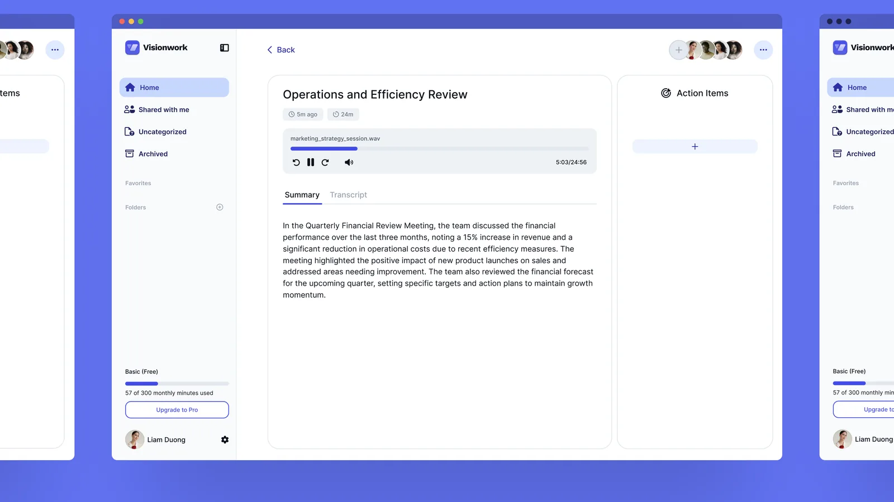
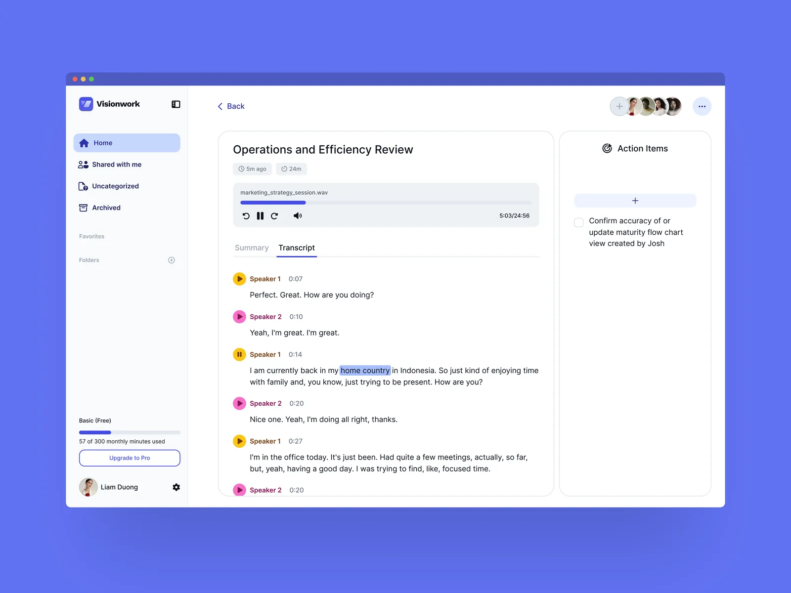
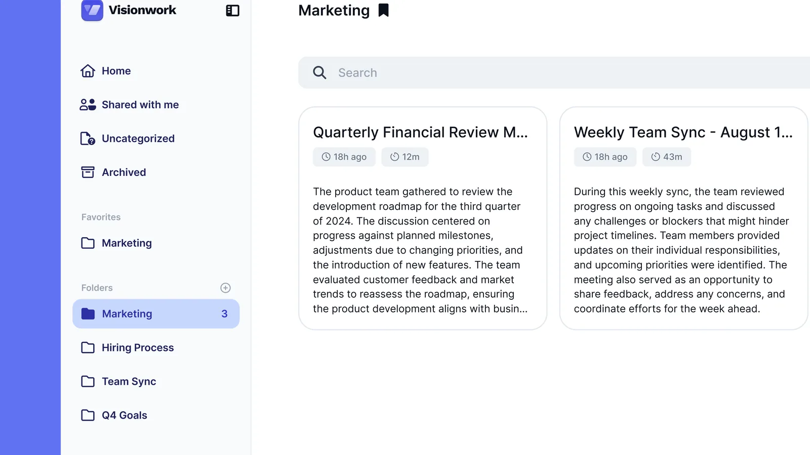
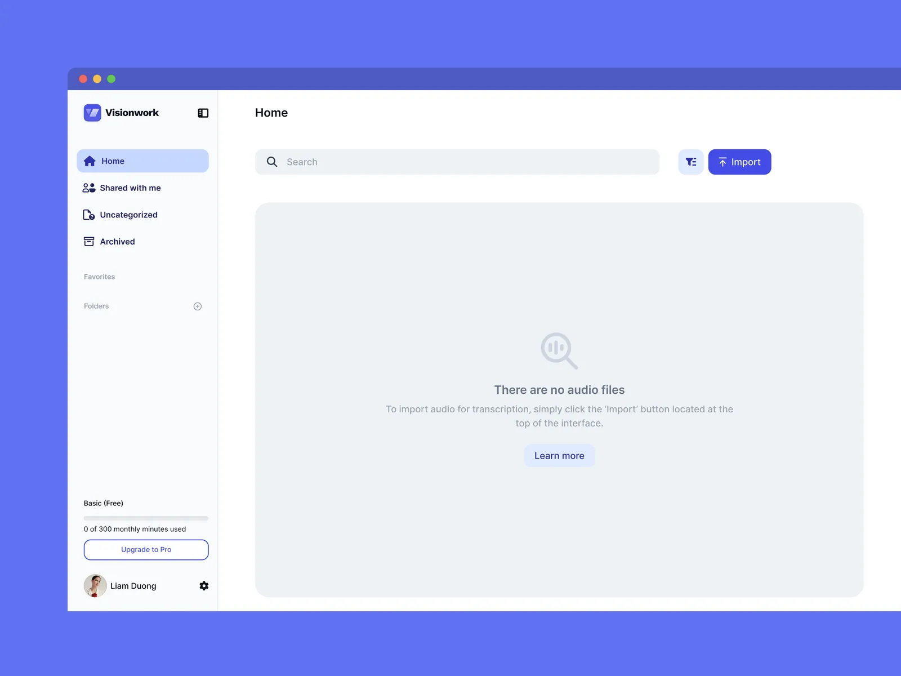
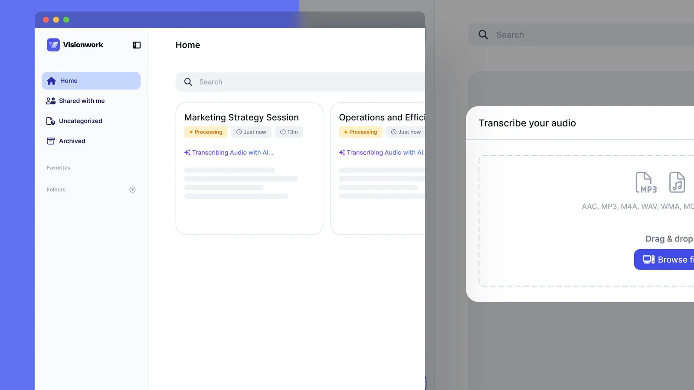

AI Transcription Web App: Turning Meeting Audio into Action Items
A concept for teams who record their meetings. You drop in the audio, and you get back a summary, a full transcript and a list of what someone agreed to do. I designed it on my own in Figma to practise, and I am planning to build it.

Project Overview
This is a desktop app for a team that records its meetings. You import an audio file, the app transcribes it, and the recording turns into three things you can use: a written summary, a transcript split by speaker, and a list of action items.
It is a self-initiated concept and nothing more than that. I designed it in Figma to a finished visual standard, I built none of it, and no user has ever tried it. I made it to practise designing a full product on my own, and I am planning to build it next.
The Problem
Transcription itself is close to solved. Every tool in this space will turn an hour of audio into an accurate wall of text. The part nobody has fixed is what happens next, because a transcript is not what anyone wanted in the first place.
What a team needs after a meeting is who agreed to do what. The recording is only the evidence for that, and the transcript is only a longer version of the same evidence. Most tools stop there and hand you the raw material, which leaves the actual work, reading it and pulling the commitments out, exactly where it was.
So I designed the whole product around one answer. The output is the action item. Everything else on the screen exists to support it or to prove it.

Why Summary Opens First
A recording opens on its summary. The transcript sits behind a tab, one click away.
I put it that way round because nobody rereads a transcript. You open a meeting from last week to remember what was decided, not to sit through twenty-four minutes of speech a second time. Making the transcript the landing view would spend the first screen on the thing people scroll past.
The transcript is still there, and it is built to be searched rather than read. Every turn carries a speaker, a timestamp and its own play button, so you can jump to the moment in the audio instead of scrubbing for it. It is the evidence, kept close to the claim.
The Action Items Panel
Action items are not a section inside the summary. They are their own column, down the right side of the screen.
That looks like a lot of space for a short list, and it is deliberate. If the action item is the real output, it cannot be a paragraph inside something else. Putting it in the summary would have made it one more thing the AI wrote, sitting in the middle of everything else the AI wrote.
Being its own column also puts it outside the Summary and Transcript tabs, so it stays visible whichever one you are in. It is the one part of the page a person adds to rather than reads, and it is the part you are meant to leave with.
Where Recordings Go
The sidebar is a file manager: Home, Shared with me, Uncategorized, Archived, then favourites and folders. The part I care about is Uncategorized.
A team that records its meetings ends up with hundreds of files, and most tools assume that people will file them. Plenty of people never do. So Uncategorized is a named place in the sidebar rather than an absence. A recording nobody sorted has somewhere it belongs, and finding it later is a click instead of a search through everything.
Folders, favourites and an archive are there for the people who do file things. They are the reward for tidiness, not the requirement for finding your own work.


Building It Next
The argument on this page is mine, and it has never met a user. I designed it from my own reasoning about meetings, which is enough to make a concept coherent and not enough to make it right.
Building it is how I intend to find out. I want to put a real transcript through it and see whether the summary is worth opening first, because that decision is the one everything else on the page leans on. It is the same way I worked on Glowsary: write the thinking down, build it, then let the real thing correct me.
